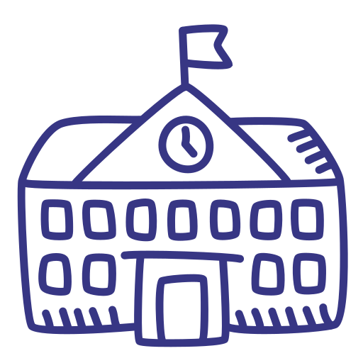

Formación Académica
Bachillerato completo
Cursé el Ciclo Básico completo en el Liceo N° 20, entre los años 2014 y 2016. Luego, cursé (dictado por primera vez en ese liceo) primer año de Bachillerato en el Liceo N° 20, segundo Científico en el Liceo N° 15 y luego finalicé mi Educación Secundaria con tercero Físico-Matemático (ingeniería) en el Liceo N° 35 "IAVA"
Universidad
Actualmente estoy estudiando Ingeniería en Informática en la Universidad de Montevideo. Comencé mi carrera en el año 2020, aunque por motivos personales no cursé el año 2022. En la carrera he tenido materias como "Programación", "Diseño de Base de Datos" y "Análisis y Diseño de Algoritmos", donde aprendí la mayor parte de los idiomas de Programación que conozco, además de como aplicarlos para que el rendimiento sea el más oportuno. Como habilidades blandas, también me vi beneficiado de materias como "Comunicación Profesional", que ayudan a preparar al estudiante para el entorno laboral en el que se verá involucrado.
Idioma no-nativo
Como idioma no-nativo hablo el inglés. No he tenido la oportunidad de tomar "oficialmente" ningún exámen internacional que abale mi nivel, pero una prueba realizada en la Universidad para identificarlo llegó a la conclusión de que manejo el inglés en nivel Intermedio.

Cursos Online
Mediante la plataforma "Coursera" estoy realizando el curso de IBM "IBM Full Stack Software Developer"